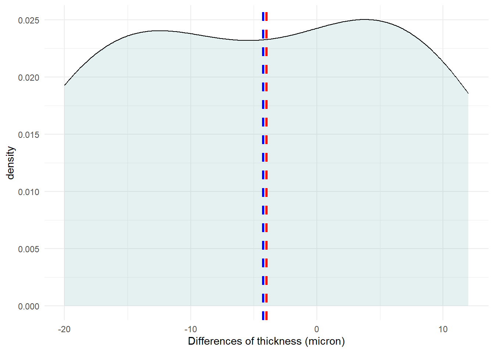

8 Wilcoxon Signed-Rank test
Wilcoxon Signed-Rank test (Wilcoxon test) is a non-parametric test that can be conducted to compare paired samples when the differences are not normally distributed. It is based on the signs of the differences and the magnitude of the rank of the differences between pairs of measurements, rather than the actual values. The null hypothesis is that there is no tendency for values under each paired variable to be higher or lower. It is often thought of as a test for small samples. However, if the sample is smaller than 6, then statistical significance is impossible.
When we have finished this Chapter, we should be able to:
8.1 Research question
The dataset eyes contains thickness of the cornea (in microns) in patients with one eye affected by glaucoma; the other eye is unaffected. We investigate if there is evidence for difference in corneal thickness in affected and unaffected eyes.
NOTE: If we are testing the null hypothesis that the median of the paired rank differences is zero, then the paired rank differences must all come from a symmetrical distribution. Note that we do not have to assume that the distributions of the original populations are symmetrical.
8.2 Packages we need
We need to load the following packages:
8.3 Preraring the data
We import the data eyes in R:
library(readxl)
eyes <- read_excel(here("data", "eyes.xlsx"))We calculate the differences using the function mutate():
We inspect the data:
glimpse(eyes) Rows: 8
Columns: 3
$ affected_eye <dbl> 488, 478, 480, 426, 440, 410, 458, 460
$ unaffected_eye <dbl> 484, 478, 492, 444, 436, 398, 464, 476
$ dif_thickness <dbl> 4, 0, -12, -18, 4, 12, -6, -168.4 Explore the characteristics of distribution of differences
The distributions of differences can be explored with appropriate plots and summary statistics.
Graph
We can explore the data visually for symmetry with a density plot.
eyes %>%
ggplot(aes(x = dif_thickness)) +
geom_density(fill = "#76B7B2", color="black", alpha = 0.2) +
geom_vline(aes(xintercept=mean(dif_thickness)),
color="blue", linetype="dashed", size=1.2) +
geom_vline(aes(xintercept=median(dif_thickness)),
color="red", linetype="dashed", size=1.2) +
labs(x = "Differences of thickness (micron)") +
theme_minimal() +
theme(plot.title.position = "plot")
Summary statistics
Summary statistics can also be calculated for the variables.
We can utilize the across() function to obtain the results across the three variables simultaneously:
summary_eyes <- eyes %>%
dplyr::summarise(across(
.cols = c(dif_thickness, affected_eye, unaffected_eye),
.fns = list(
n = ~n(),
na = ~sum(is.na(.)),
min = ~min(., na.rm = TRUE),
q1 = ~quantile(., 0.25, na.rm = TRUE),
median = ~quantile(., 0.5, na.rm = TRUE),
q3 = ~quantile(., 0.75, na.rm = TRUE),
max = ~max(., na.rm = TRUE),
mean = ~mean(., na.rm = TRUE),
sd = ~sd(., na.rm = TRUE),
skewness = ~EnvStats::skewness(., na.rm = TRUE),
kurtosis= ~EnvStats::kurtosis(., na.rm = TRUE)
),
.names = "{col}_{fn}")
)
# present the results
summary_eyes <- summary_eyes %>%
mutate(across(everything(), round, 2)) %>% # round to 3 decimal places
pivot_longer(1:33, names_to = "Stats", values_to = "Values") # long format
summary_eyes# A tibble: 33 × 2
Stats Values
<chr> <dbl>
1 dif_thickness_n 8
2 dif_thickness_na 0
3 dif_thickness_min -18
4 dif_thickness_q1 -13
5 dif_thickness_median -3
6 dif_thickness_q3 4
7 dif_thickness_max 12
8 dif_thickness_mean -4
9 dif_thickness_sd 10.7
10 dif_thickness_skewness 0.03
# … with 23 more rowseyes %>%
dlookr::describe(dif_thickness, affected_eye, unaffected_eye) %>%
select(described_variables, n, na, mean, sd, p25, p50, p75, skewness, kurtosis) %>%
ungroup()# A tibble: 3 × 10
described_variables n na mean sd p25 p50 p75 skewness kurto…¹
<chr> <int> <int> <dbl> <dbl> <dbl> <dbl> <dbl> <dbl> <dbl>
1 dif_thickness 8 0 -4 10.7 -13 -3 4 0.0295 -1.37
2 affected_eye 8 0 455 27.7 436. 459 478. -0.493 -0.985
3 unaffected_eye 8 0 459 31.3 442 470 480. -1.11 0.794
# … with abbreviated variable name ¹kurtosisThe differences seems to come from a population with a symmetrical distribution and the skewness is close to zero (0.03). However, the (excess) kurtosis equals to -1.37 (platykurtic) and the sample size is small. Therefore, the data may not follow the normal distribution.
Normality test
We can use Shapiro-Wilk test to check for normality of the differences.
eyes %>%
shapiro_test(dif_thickness)# A tibble: 1 × 3
variable statistic p
<chr> <dbl> <dbl>
1 dif_thickness 0.944 0.651The Shapiro-Wilk test suggests that the weight differences are normally distributed (p=0.65 > 0.05). However, here, normality test is not helpful because of the small sample (the test is under-powered).
8.5 Run the Wilcoxon Signed-Rank test
The differences between the two measurements can be tested using a rank test such as Wilcoxon Signed-Rank test.
wilcox.test(eyes$dif_thickness, conf.int = T)
Wilcoxon signed rank test with continuity correction
data: eyes$dif_thickness
V = 7.5, p-value = 0.3088
alternative hypothesis: true location is not equal to 0
95 percent confidence interval:
-16.999946 8.000014
sample estimates:
(pseudo)median
-5.992207 wilcox.test(eyes$affected_eye, eyes$unaffected_eye, conf.int = T, paired = TRUE)
Wilcoxon signed rank test with continuity correction
data: eyes$affected_eye and eyes$unaffected_eye
V = 7.5, p-value = 0.3088
alternative hypothesis: true location shift is not equal to 0
95 percent confidence interval:
-16.999946 8.000014
sample estimates:
(pseudo)median
-5.992207 eyes %>%
wilcox_test(dif_thickness ~ 1)# A tibble: 1 × 6
.y. group1 group2 n statistic p
* <chr> <chr> <chr> <int> <dbl> <dbl>
1 dif_thickness 1 null model 8 7.5 0.309The result is not significant (p = 0.31 > 0.05). However, we can’t be certain that there is not difference in corneal thickness in affected and unaffected eyes because the sample size is very small.
8.6 Present the results in a summary table
Show the code
tb2 <- eyes %>%
mutate(id = row_number()) %>%
select(-dif_thickness) %>%
pivot_longer(!id, names_to = "groups", values_to = "thickness")
tb2 %>%
tbl_summary(by = groups, include = -id,
label = list(thickness ~ "thickness (microns)"),
digits = list(everything() ~ 1)) %>%
add_p(test = thickness ~ "paired.wilcox.test", group = id,
estimate_fun = thickness ~ function(x) style_sigfig(x, digits = 3))| Characteristic | affected_eye, N = 81 | unaffected_eye, N = 81 | p-value2 |
|---|---|---|---|
| thickness (microns) | 459.0 (436.5, 478.5) | 470.0 (442.0, 479.5) | 0.3 |
| 1 Median (IQR) | |||
| 2 Wilcoxon signed rank test with continuity correction | |||
There is not evidence from this small study with patients of glaucoma that the thickness of the cornea in affected eyes, median = 459 \(\mu{m}\) (IQR: 436.5, 478.5), differs from unaffected eyes 470 \(\mu{m}\) (442, 479.5). The result (pseudomedian = -6, 95% CI: -16 to 8) is not significant (p=0.30 >0.05).